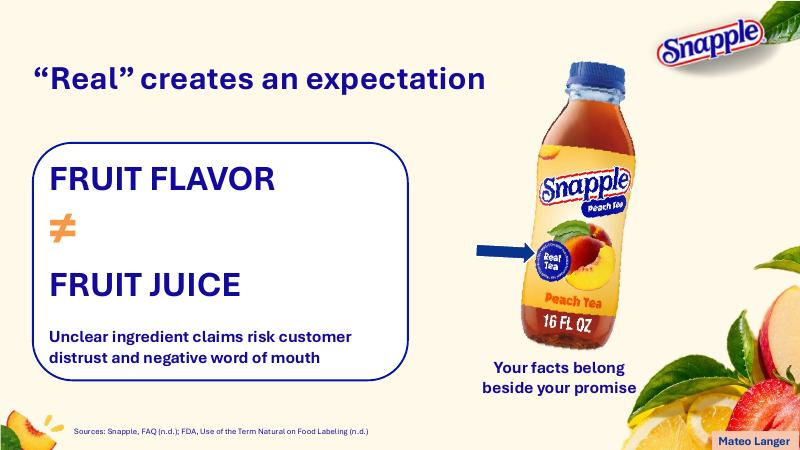

Legal Intern, Santa Cruz County Attorney’s Office · Pre-Law, University of Arizona
Legal Intern, Santa Cruz County Attorney’s Office
A portfolio for attorneys, law offices, and internship coordinators seeking a diligent, coachable legal intern: who I am, how I have grown, and the work that proves it.
I am a junior at the University of Arizona’s Eller College of Management, studying Business Management and preparing for law school.
As a Legal Intern at the Santa Cruz County Attorney’s Office in Nogales, I attend preliminary hearings alongside prosecutors and build detailed event timelines that help attorneys test whether a defendant’s account holds up. That work rewards the qualities my teammates and supervisors consistently describe in me: reliability, organization, and high standards for accuracy.
Beyond the courtroom, I have overseen housing operations as Tau Kappa Epsilon’s Housing Manager, served families facing food insecurity with Broomfield FISH, and worked fast paced service roles where clear communication matters. I have earned the Dean’s List four times while balancing these responsibilities, and I am seeking legal internships, especially in civil litigation, where I can contribute from day one.
What I offer you: reliability you never have to double check, and a willingness to step into uncomfortable situations so I keep growing. Below I compare how I see myself (Self Perception Inventory) with how others see me (three rounds of 360 peer reviews and a Personal Reputation Survey), and explain my strategy for closing the gaps.
In high school, I did not see the long term cost of the effort I was skipping. When decisions arrived, the University of Arizona was the only school that admitted me; my home state schools, the University of Colorado and Colorado State, turned me down. I was embarrassed, and it flipped a switch. I set out to prove that if I gave everything I had, I could excel. Since then: a 3.72 GPA, four Dean’s List semesters, and a legal internship as a junior.Effort compounds. The choices made today decide which doors are open tomorrow.
Admitted only to the University of Arizona after an unfocused high school career. I commit to maximum effort.
Begin volunteering with Broomfield FISH, serving families facing food insecurity, while working as a barista.
First semester at Eller College of Management. Dean’s List.
Dean’s List with Distinction. Begin serving at Chicken N Pickle that summer.
Named Housing Manager for Tau Kappa Epsilon. Dean’s List again.
Fourth Dean’s List semester, with a 3.72 cumulative GPA.
Legal Intern at the Santa Cruz County Attorney’s Office. Peers rate my effort 96.8 out of 100 on average across three team reviews.
A civil litigation internship, LSAT preparation, and graduation in May 2028.
The strongest program I can earn my way into.
Extremely reliable. When he takes something on, it gets done, and done right. You never have to chase him down.Personal Reputation Survey
Team member is on top of everything and organized.360 Review, Round 1
This is where my identity and reputation align most closely: I see myself as driven, and others see someone who delivers without reminders. The flip side of high standards, noted in my PRS, is that I can struggle to delegate and can be too hard on myself. In a legal office, where accuracy is everything, I will keep the standard but ask early about priorities so my effort goes where the attorney needs it most.
My SPI identifies an Amiable/Analytical style: thoughtful, process oriented, and supportive, with a preference for direct communication and firm deadlines. The revealing finding is the gap between how I see myself and how people read me at first.
My team engagement score stayed above the team average every round: 3.67, 4.0, and 3.8 out of 4, against averages of 3.60, 3.60, and 3.56.
The warmth people eventually see in me is real, but because my style is reserved at first, new colleagues can mistake it for disinterest, the opposite of the image I want. My strategy is to make that warmth visible sooner: introducing myself first, asking questions early, and sharing ideas before they feel perfect. My internship provides daily practice, since working alongside prosecutors and court staff demands clear, prompt communication with people I have just met.
The clearest theme across my feedback: my content is strong, and my delivery is catching up. For a future attorney, it is the most important gap to close.
Did very well overall, just speak with confidence.360 Review, Round 1
Need to release your worry before speaking.360 Review, Round 3
He was able to shrug it off and continue easily, which I found very admirable and it speaks to his character.360 Review, Round 3
My average across six teamwork behaviors beat the team average in every round, and Round 3 teammates called me “good at communicating.”
I know my material; my growth area is trusting myself to deliver it without overthinking. Rather than waiting to feel ready, I deliberately put myself in uncomfortable situations at my internship: speaking up more, engaging with attorneys and staff, and learning to think on my feet in a courtroom setting. It builds the confidence I need now and prepares me for the career ahead. Round 3 shows it is working: when I stumble, I recover and keep going.
Short on time? Start here.
I introduce myself, explain why I am pursuing law, and share what I bring to a legal team: steady reliability, a strong work ethic, and a commitment to keep growing.
Watch on YouTube →Each exhibit supports a claim above: independent analytical writing, evidence based argument, and professional teamwork. Open one to review it.

I am actively seeking legal internship opportunities, especially in civil litigation, and I would welcome the chance to connect.